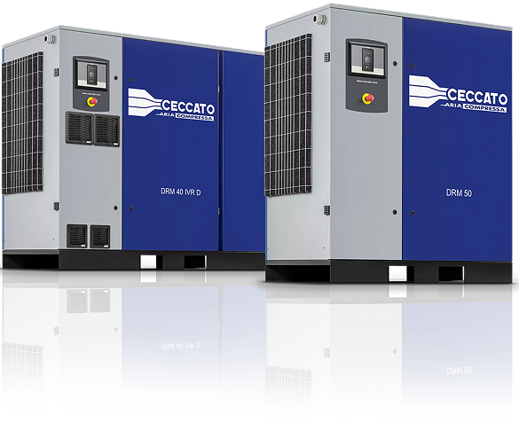
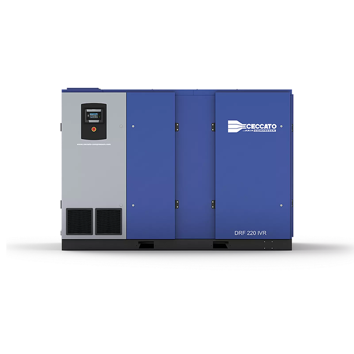
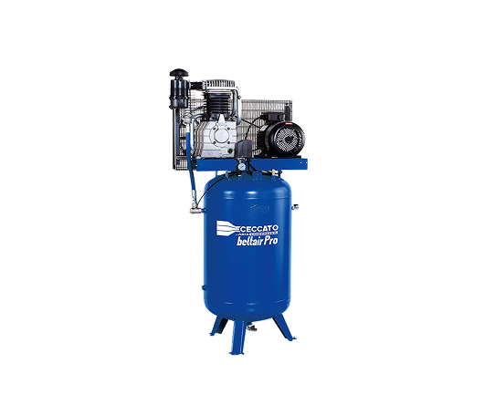
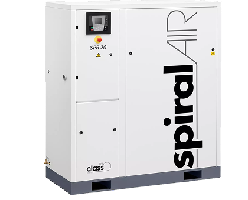
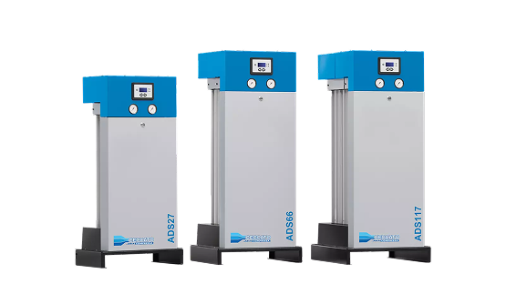
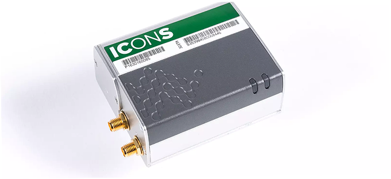

Товары CECCATO

Винтовой компрессор
Надежные, устойчивые и эффективные винтовые компрессоры Ceccato являются безопасным вложением.
Перейти
Поршневой компрессор
Поршневые компрессоры идеально подходят как для профессионалов, так и для любителей, которым не требуется постоянное подача сжатого воздуха. Поршневые компрессоры Ceccato надежны, компактны и проверены на работоспособность в течение многих лет. Поршневые компрессоры выпускаются с колесным или базовым приводом, с коаксиальной или ременной передачей, могут работать со смазкой или без масла, с дизельными или масляными двигателями и быть бесшумными. Они бывают всех форм и размеров, вплоть до машин с давлением до 15 бар.
Перейти
Безмасляный компрессор
Безмасляные компрессоры были разработаны для всех промышленных и профессиональных применений, где качество воздуха играет фундаментальную роль. Безмасляные компрессоры Ceccato широко используются в пищевой промышленности, производстве напитков, электронике, химической и фармацевтической промышленности, стоматологии, лабораториях и медицинских клиниках.
Перейти
Решения для обработки воздуха
Мы предлагаем несколько вариантов, чтобы удовлетворить все ваши требования к обработке сжатого воздуха.
Перейти
Управление воздухом
Решения CECCATO оптимизируют и управляют производством сжатого воздуха, обеспечивая превращение подключенного компрессора в бесценный актив для вашей деятельности.
Перейти